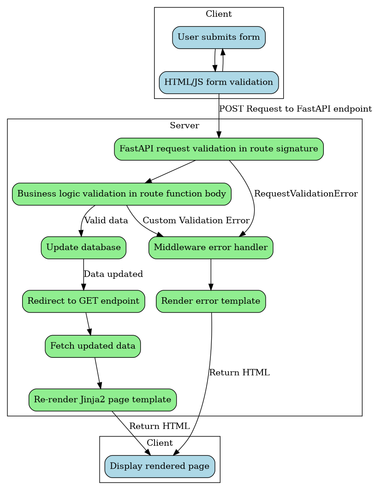

Architecture
Data flow
This application uses a Post-Redirect-Get (PRG) pattern. The user submits a form, which sends a POST request to a FastAPI endpoint on the server. The database is updated, and the user is redirected to a GET endpoint, which fetches the updated data and re-renders the Jinja2 page template with the new data.

The advantage of the PRG pattern is that it is very straightforward to implement and keeps most of the rendering logic on the server side. The disadvantage is that it requires an extra round trip to the database to fetch the updated data, and re-rendering the entire page template may be less efficient than a partial page update on the client side.
Form validation flow
We’ve experimented with several approaches to validating form inputs in the FastAPI endpoints.
Objectives
Ideally, on an invalid input, we would redirect the user back to the form, preserving their inputs and displaying an error message about which input was invalid.
This would keep the error handling consistent with the PRG pattern described in the Architecture section of this documentation.
To keep the code DRY, we’d also like to handle such validation with Pydantic dependencies, Python exceptions, and exception-handling middleware as much as possible.
Obstacles
One challenge is that if we redirect back to the page with the form, the page is re-rendered with empty form fields.
This can be overcome by passing the inputs from the request as context variables to the template.
But that’s a bit clunky, because then we have to support form-specific context variables in every form page and corresponding GET endpoint.
Also, we have to:
- access the request object (which is not by default available to our middleware), and
- extract the form inputs (at least one of which is invalid in this error case), and
- pass the form inputs to the template (which is a bit challenging to do in a DRY way since there are different sets of form inputs for different forms).
Solving these challenges is possible, but gets high-complexity pretty quickly.
Approaches
The best solution, I think, is to use really robust client-side form validation to prevent invalid inputs from being sent to the server in the first place. That makes it less important what we do on the server side, although we still need to handle the server-side error case as a backup in the event that something slips past our validation on the client side.
Here are some patterns we’ve considered for server-side error handling:
| ID | Approach | Returns to same page | Preserves form inputs | Follows PRG pattern | Complexity |
|---|---|---|---|---|---|
| 1 | Validate with Pydantic dependency, catch and redirect from middleware (with exception message as context) to an error page with “go back” button | No | Yes | Yes | Low |
| 2 | Validate in FastAPI endpoint function body, redirect to origin page with error message query param | Yes | No | Yes | Medium |
| 3 | Validate in FastAPI endpoint function body, redirect to origin page with error message query param and form inputs as context so we can re-render page with original form inputs | Yes | Yes | Yes | High |
| 4 | Validate with Pydantic dependency, use session context to get form inputs from request, redirect to origin page from middleware with exception message and form inputs as context so we can re-render page with original form inputs | Yes | Yes | Yes | High |
| 5 | Validate in either Pydantic dependency or function endpoint body and directly return error message or error toast HTML partial in JSON, then mount error toast with HTMX or some simple layout-level Javascript | Yes | Yes | No | Low |
Presently this template primarily uses option 1 but also supports option 2. Ultimately, I think option 5 will be preferable; support for that is planned for a future update or fork of this template.